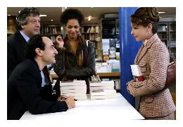
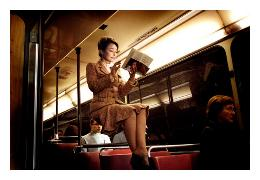

ODETTE TOULEMONDE
 Un film de Eric-Emmanuel Schmitt avec Catherine Frot, Albert Dupontel, Jacques Weber
Un film de Eric-Emmanuel Schmitt avec Catherine Frot, Albert Dupontel, Jacques Weber
Durée : 1h44
Synopsis:
Odette Toulemonde n'a objectivement rien pour être heureuse mais l'est. Balthazar Balsan a tout pour être heureux mais ne l'est pas.
Odette, la quarantaine maladroite, entre un fils coiffeur savoureux, une fille engluée dans sa puberté, travaille le jour au rayon cosmétiques d'un grand magasin et coud le soir des plumes sur des costumes de revues parisiennes. Elle rêve de remercier Balthazar Balsan, son auteur préféré, à qui - pense-t-elle- elle doit son optimisme.
L'écrivain parisien, riche et séducteur, va débarquer dans sa vie de façon inattendue. Récit de la rencontre comique et fantasque de deux naufragés atypiques que tout sépare...

Anecdotes, notes de production et interview (Allo-ciné et dossier de presse)
Schmitt, la rencontre de la littérature et du cinéma
Odette Toulemonde est le premier long métrage réalisé par Eric-Emmanuel Schmitt, auteur français né en 1960, connu surtout pour ses pièces de théâtre. Révélé par la pièce La Nuit de Valognes en 1991, il connaît un grand succès en 1993 avec Le Visiteur, ou la rencontre de Freud avec Dieu. Le thème de la rencontre est d'ailleurs au coeur de l'oeuvre de l'écrivain, qui aime aussi s'inspirer de la vie de personnages célèbres. Dès lors, les stars de cinéma se succèdent sur les planches pour dire ses mots : Alain Delon (Variations énigmatiques), Jean-Paul Belmondo (Frédérick ou le Boulevard du crime, autour du personnage interprété par Pierre Brasseur dans Les Enfants du paradis, Danielle Darrieux (Oscar et la dame rose) ou encore le tandem Charlotte Rampling/Bernard Giraudeau (Petits crimes conjugaux). Deux de ses pièces ont déjà fait l'objet d'adaptations cinématographiques : Le Libertin, un film signé Gabriel Aghion et Monsieur Ibrahim et les fleurs du Coran, réalisé par François Dupeyron. Par ailleurs, Schmitt a travaillé comme scénariste, souvent pour des téléfilms inspirés de chefs-d'oeuvre de la littérature ou du cinéma : Senso, Les Liaisons dangereuses, Milady.
Dans la tête d'Odette
Catherine Frot brosse le portrait de son personnage : "C'est une madame Toulemonde qui ne ressemble à personne. Elle est un personnage altruiste, généreux, qui souffre pour les autres. Elle fait partie de ces personnes qu'on a tendance à mépriser. Pour moi, Odette est de la famille de Yoyo dans Un air de famille et de Louise dans Les Soeurs fâchées. En même temps, elle me fait aussi penser aux héroïnes des films de Pagnol qui avaient aussi cette candeur."
 Un coeur simple
Un coeur simple
Eric-Emmanuel Schmitt revient sur l'authentique anecdote qui est à l'origine de ce récit : "Lors d'une tournée en Allemagne au bord de la mer baltique, je faisais une signature et une conférence dans un théâtre plein à craquer et, pourtant, j'étais triste. C'était le jour de mon anniversaire, personne ne le savait et je me trouvais loin de chez moi. Une lectrice m'a alors tendu une lettre. Endimanchée, elle s'était faite trop coquette pour l'occasion... A travers l'enveloppe, j'ai senti qu'il y avait un coeur en mousse à l'intérieur : j'ai vérifié, il y en avait bien un  ! Même si je l'ai remerciée, je l'ai très mal pris parce que son présent était kitsch, parce qu'elle n'avait pas les mêmes goûts que moi ; je ne comprenais pas comment elle pouvait aimer mes livres. Au fond - j'ose le dire - j'avais presque honte d'avoir une admiratrice comme elle (...) En fait, cette lectrice ne disposait que d'un langage kitsch pour exprimer son affection et moi, je ne voyais que le kitsch au lieu d'apercevoir la générosité et l'humanité que recelait cette femme. Sur le coup, j'ai réagi en bon français, bien critique, avec ce mépris moqueur pour le goût des autres. Une heure après, seul dans ma chambre d'hôtel, triste, mélancolique, j'ai ouvert cette lettre. Elle était très belle et ce coeur que je trouvais ridicule, je l'ai mis contre ma poitrine et l'ai gardé presque toute la nuit sur moi."
! Même si je l'ai remerciée, je l'ai très mal pris parce que son présent était kitsch, parce qu'elle n'avait pas les mêmes goûts que moi ; je ne comprenais pas comment elle pouvait aimer mes livres. Au fond - j'ose le dire - j'avais presque honte d'avoir une admiratrice comme elle (...) En fait, cette lectrice ne disposait que d'un langage kitsch pour exprimer son affection et moi, je ne voyais que le kitsch au lieu d'apercevoir la générosité et l'humanité que recelait cette femme. Sur le coup, j'ai réagi en bon français, bien critique, avec ce mépris moqueur pour le goût des autres. Une heure après, seul dans ma chambre d'hôtel, triste, mélancolique, j'ai ouvert cette lettre. Elle était très belle et ce coeur que je trouvais ridicule, je l'ai mis contre ma poitrine et l'ai gardé presque toute la nuit sur moi."
Et moi et moi et Moix
Eric-Emmanuel Schmitt explique qu'il a décidé de concrétiser son désir ancien de réalisation après avoir discuté avec un de ses fameux confrères : "C'est grâce à Yann Moix. Il allait tourner Podium et, sincèrement, je n'étais ni jaloux, ni envieux, au contraire, j'étais très content pour lui qu'il fasse son film. Il m'a demandé : "Et pourquoi tu n'en fais pas un ?" Je lui ai répondu : "Parce que j'en suis bien incapable !" Et là, il a prononcé cette phrase : "S'il y a bien une personne qui connaît l'univers d'Eric-Emmanuel Schmitt, c'est Eric-Emmanuel Schmitt !" C'était tout bête mais ces mots ont provoqué un déclic. Je me suis dit : "C'est vrai, s'il y a quelqu'un qui connaît mon univers, c'est moi."" J'ai parfois ressenti un sentiment d'insatisfaction en voyant certaines mises en scène de mon texte au théâtre ou au cinéma car ce n'était pas complètement " juste " selon moi. Sur le tournage, mon obsession a été de trouver ce qui est " juste " : le mouvement de caméra juste, l'inflexion juste, le silence juste..."
Ecran et encre
Odette Toulemonde n'est pas l'adaptation d'un récit déjà existant, mais un scénario original : "Normalement, un livre donne un film, là c'est un film qui a donné un livre !", s'amuse le cinéaste à propos de l'ouvrage Odette Toulemonde et autres récits paru peu avant la sortie du film. "J'étais en train d'écrire un gros livre avant que le film ne commence. On m'a fait signer un contrat qui m'interdisait les sports violents et l'écriture. Cela m'a tellement énervé que, sur le tournage et pendant le montage, dès que j'avais un moment de libre, j'écrivais des nouvelles qui sont maintenant dans le recueil. Et quand le film a été fini, je me suis dit que j'allais écrire celle du film. Elle est donc légèrement différente du film parce que je n'utilise pas le même moyen d'expression."
Cinéphilie
Pour Eric-Emmanuel Schmitt, le cinéma est une passion ancienne : "Quand j'avais dix ans et qu'on me demandait ce que je voulais faire, je répondais : "Walt Disney" !" révèle-t-il. "Pour moi, cela voulait dire cinéaste parce que je n'avais pas encore affiné mon analyse et qu'à l'époque, je ne voyais que des dessins animés. Après, je ne sais pas pourquoi, je n'ai pas donné libre accès à ce désir (...) Le jour où j'ai pris conscience que le cinéma était un art, j'avais quinze ans et je venais de voir Orphée de Jean Cocteau. Ce film m'a ébloui et je n'ai cessé de le revoir. J'ai aimé cette histoire à la fois métaphysique et poétique mais j'étais aussi en admiration devant les effets spéciaux. À partir de ce jour-là, je me suis pris d'une passion pour le cinéma qui oscillait entre des auteurs comme Cocteau et des grands réalisateurs de comédie. J'ai aimé Ophüls, Lubitsch... To be or not to be est un film que je connais par coeur ! Parmi les cinéastes contemporains, j'éprouve une grande admiration pour Jaco van Dormael."
 Mme Toulemonde, c'est moi
Mme Toulemonde, c'est moi
Si on peut penser qu'Eric-Emmanuel Schmitt a puisé dans sa propre expérience pour construire le personnage de Balhazar, écrivain populaire méprisé par une partie de la critique, le cinéaste se reconnaît également dans le personnage féminin : "Je me sens autant Odette que Balthazar. Je pense que le bonheur que j'ai éprouvé en faisant ce film a été de laisser parler cette joie de vivre que j'ai en moi, que je peux parfois exprimer sous une forme philosophique et métaphysique mais jamais en son, en image et en mouvement. Grâce à la rencontre avec Catherine Frot capable de porter un personnage comme celui-là, grâce au cinéma, j'ai l'impression d'avoir été beaucoup plus moi-même. Cela me ressemble plus que beaucoup de choses que j'ai faites parce qu'il y a cette espèce de bonheur de vivre que je n'ai jamais su exprimer ailleurs. J'ai des naïvetés et des candeurs comme celles d'Odette et j'ai des moments de déprime et des ambitions comme Balthazar."
Histoire belge
Eric-Emmanuel Schmitt a souhaité tourner son film en Belgique, et notamment à Bruxelles, la ville dans laquelle il a élu domicile. Une partie du casting est d'ailleurs composée de comédiens locaux : c'est le cas des deux acteurs qui incarnent les enfants d'Odette, Fabrice Murgia (Rudy) et Nina Drecq (Sue Helen...). La vieille dame dure d'oreille que croise Odette dans le bus a les traits de Jacqueline Bir, une comédienne française qui a fait carrière en Belgique. Mère du regretté Philippe Volter, elle a joué sur les planches de Bruxelles le rôle principal d'Oscar et la dame rose, une pièce d'Eric-Emmanuel Schmitt.
 Le fantôme de Yoyo
Le fantôme de Yoyo
Dans une des scènes du film, l'héroïne se lamente parce qu'elle trouve son prénom ridicule, estimant qu'Odette est un nom qu'on attribuerait plutôt à un caniche. "Ne manque plus que le collier de chien", dit-elle en substance. S'agit-il d'une référence à Yolande, le personnage d'Un air de famille, qui a rendu célèbre l'actrice (dans une des séquences les plus fameuses, elle se voit recevoir un bijou qui ressemble à un collier pour chien...) ? La comédienne a confié qu'elle avait posé la question au réalisateur, "Il n'a jamais voulu me le dire mais je pense quand même que c'est une référence. C'est bizarre, hein ? Soit c'est un acte manqué, soit il l'a fait exprès. Je ne sais pas, il me l'a jamais dit. En tout cas, quand je l'ai lu, effectivement j'y ai tout de suite pensé."

Elévation énigmatique
Catherine Frot revient sur la scène dans laquelle on la voit s'envoler : "C'était impressionnant parce qu'il faisait -1°et j'étais à 28 mètres d'altitude sur une grue immense d'où je voyais toute la ville de Charleroi. Il n'y avait aucun trucage. Je suis vraiment dans les airs, sanglée dans un truc hallucinant... Et à Bruxelles, j'étais dans une petite nacelle grande comme moi !"
 La musique est belle
La musique est belle
La bande originale de Odette Toulemonde est signée de l'Italien Nicola Piovani, l'un des des plus grands compositeurs de musique de films actuels. Ses partitions, entre légèreté et mélancolie, accompagnent les films des plus grands cinéastes transalpins, de Bellocchio (Le Saut dans le vide) à Moretti (La Chambre du fils) en passant par Fellini (Intervista), les frères Taviani (Kaos) ou encore Roberto Benigni (La vie est belle). Eric-Emmanuel Schmitt n'est pas le premier réalisateur français à faire appel à lui, puisqu'on lui doit entre autres la musique de Drôle d'endroit pour une rencontre de François Dupeyron, L'Equipier et Je vais bien, ne t'en fais pas de Philippe Lioret ou encore Fauteuils d'orchestre de Danièle Thompson.